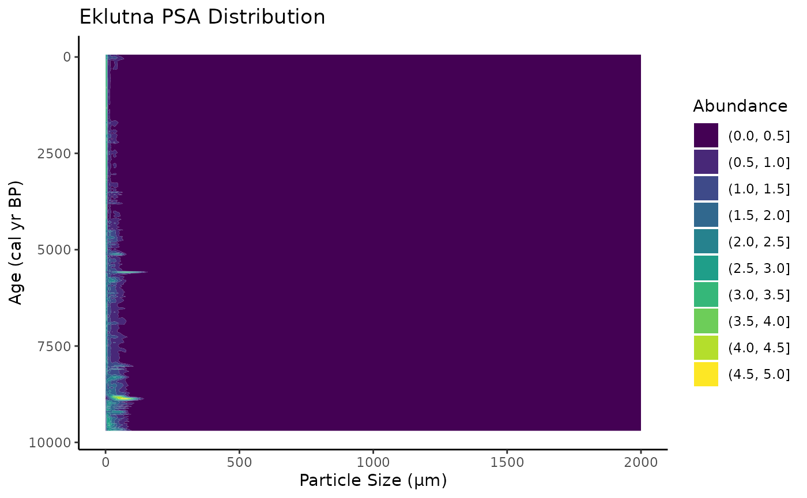
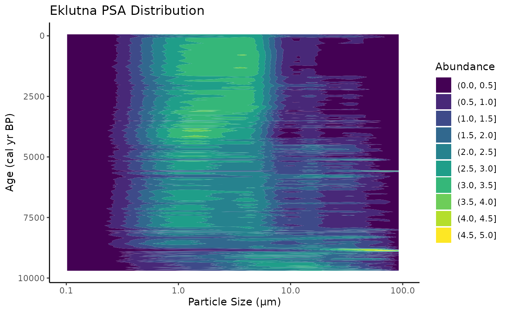
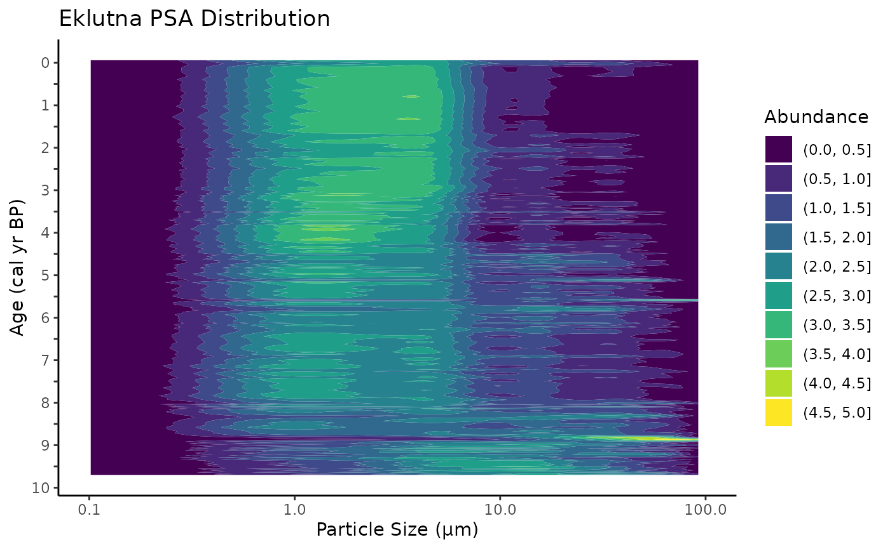

psa_heatmap
Hunter
2024-03-26
psa_heatmap.Rmd## Welcome to geoChronR version 1.1.12!## ##
## Attaching package: 'geoChronR'## The following objects are masked from 'package:lipdR':
##
## createTSid, pullTsVariableTable of Contents 1. Standardized Data 2. LIPD Playground 3. Age Modeling 4. Plotting Sed. Rate and MAR 5. Plotting Multi-Proxy Records 6. Particle Size Heatmap
6. Particle Size Heatmap
At this point in the vignettes, you should have a few plots, an age model, and a lip file with all of your chron and paleo data saved.
After running your age model, you should get a text file that associates every centimeter of your core with an age. Follow the steps in Section 4. Plotting Sed. Rate and MAR to find this file.
Once you have located it, bring it into your main “yyyy.mm.dd.lakename_proxydata” file for your lake. You can find a clean version of the Excel file here: https://docs.google.com/spreadsheets/d/1IUNLVnXgNeDRKuJ9ysiAO2V2DdnlzheV/edit?usp=drive_link&ouid=105286369374985387783&rtpof=true&sd=true
Or, for practice, the Eklutna dataset:
Great once you have a lake proxy file set up in Excel and have found the age-model output text file head to the “psa” sheet. This is where you should save the output from the lab’s Particle Size Analyzer. Here, you will see two columns on the far right side of the datasheet, “age_model_depth” and “age_cal_bp_yr”. Copy and paste the depth from the .txt file and the median age into these two columns. Keep the names “depth_2” and “age.” It is very important that this Excel sheet looks exactly like this, as the R code requires a certain number of columns to work.

Once you have the psa sheet filled in, you must reload the Excel sheet in R.
# Replace 'path/to/your/excel_file.xlsx' with the actual file path
excel_file_path <- system.file("extdata", "2024.03.24_eklutna_compilation.xlsx", package = "paleosedr", mustWork = TRUE)
# Call the load_paleo_data function to read in the Excel file
all_data <- load_paleo_data(excel_file_path)## New names:
## New names:
## New names:
## New names:
## New names:
## New names:
## New names:
## New names:
## New names:
## New names:
## New names:
## New names:
## New names:
## • `drive` -> `drive...2`
## • `` -> `...4`
## • `drive` -> `drive...5`We will utilize two new functions from this package to organize the data “get_heatmap_data” and plot it “psa_heatmap.”
The get_heatmap_data function will grab the PCA data that is associated with “depth_cm” and “age_model_depth” and sink the two datasets by the age of the “age_cal_bp_yr” column. In this example we’ll use Eklutna again.
eklutna_heat_map <- get_heatmap_data(all_data)Now you have a variable with the sediment core’s “binned” grain size data ready to be plotted with “psa_heatmap.” It will produce a variable called “melted_df” that you’ll use to make your heatmap plot.
eklutna_heatmap_plot <- psa_heatmap(eklutna_heat_map)
eklutna_heatmap_plot
Excellent! You should now have a heatmap of the downcore particle size, but it looks off. Like the previous plots, this is a ggplot and can be manipulated with different color patterns and x/y limits. I personally like plotting grain-size data with a logarithmic scale. If your data is dominated by the clay to silt sizes, you can set it up like this:
eklutna_heatmap_plot <-eklutna_heatmap_plot +
scale_y_log10(limits = c(1e-01, 1e+02))
eklutna_heatmap_plot## Warning: Contour data has duplicated x, y coordinates.
## ℹ 13200 duplicated rows have been dropped.## Warning: Removed 264 rows containing non-finite outside the scale range
## (`stat_contour_filled()`).
You can adjust the y-axis ages like this, but remember to switch out the breaks and labels with the ages/depths for your core!
eklutna_heatmap_plot <-eklutna_heatmap_plot +
scale_x_reverse(breaks = c(10000,9500,9000,8500, 8000,7500, 7000,6500, 6000,5500, 5000,4500, 4000,3500, 3000,2500, 2000,1500, 1000,500, 0),
labels = c("10", "", "9","", "8","", "7","", "6","", "5","", "4","", "3","", "2","", "1","", "0"))## Scale for x is already present.
## Adding another scale for x, which will replace the existing scale.
eklutna_heatmap_plot## Warning: Contour data has duplicated x, y coordinates.
## ℹ 13200 duplicated rows have been dropped.## Warning: Removed 264 rows containing non-finite outside the scale range
## (`stat_contour_filled()`).
I usally plot grainsize against the d.50 plot, sed. rate/MAR, or the accumilation of a specific element from XRF. We can use the plots we have already made from Sections 4 and 5 and grid.arrange them next to the new particle size heat map.